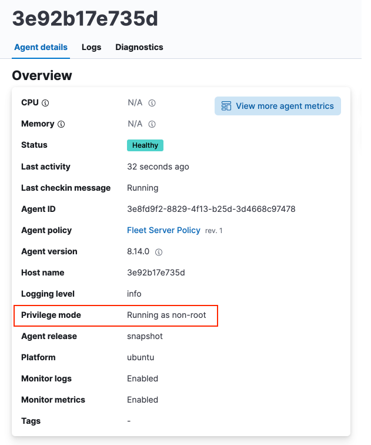

Run Elastic Agent without administrative privileges
editThis functionality is in technical preview and may be changed or removed in a future release. Elastic will work to fix any issues, but features in technical preview are not subject to the support SLA of official GA features.
Beginning with Elastic Stack version 8.15, Elastic Agent is no longer required to be run by a user with superuser privileges. You can now run agents in an unprivileged mode that does not require root access on Linux or macOS, or admin access on Windows. Being able to run agents without full administrative privileges is often a requirement in organizations where this kind of access is often very limited.
In general, agents running without full administrative privileges will perform and behave exactly as those run by a superuser. There are certain integrations and datastreams that are not available, however. If an integration requires root access, this is indicated on the integration main page.
You can also change the privilege mode of an Elastic Agent after it has been installed.
Refer to Agent and dashboard behaviors in unprivileged mode and Run Elastic Agent in unprivileged mode for the requirements and steps associated with running an agent without full root or admin superuser privileges.
Run Elastic Agent in unprivileged mode
editTo run Elastic Agent without administrative privileges you use exactly the same commands that you use for Elastic Agent otherwise, with one exception. When you run the elastic-agent install command, add the --unprivileged flag. For example:
elastic-agent install \ --url=https://cedd4e0e21e240b4s2bbbebdf1d6d52f.fleet.eu-west-1.aws.cld.elstc.co:443 \ --enrollment-token=NEFmVllaa0JLRXhKebVKVTR5TTI6N2JaVlJpSGpScmV0ZUVnZVlRUExFQQ== \ --unprivileged
Note the following current restrictions for running Elastic Agent in unprivileged mode:
-
On Linux systems, after Elastic Agent has been installed with the
--unprivilegedflag, all Elastic Agent commands can be run without being the root user.-
The
sudooption is still required for theelastic-agent installcommand. Onlyrootcan install new services. The installed service will not run as the root user.
-
The
-
Using
sudowithout specifying an alternate non-root user withsudo -uin a command may result in an error due to the agent not having the required privileges. -
Using
sudo -u elastic-agent-userwill run commands as the user running the Elastic Agent service and will always work. -
For files that allow users in the
elastic-agentgroup access, using an alternate user that has been added to that group will also work. There are still some commands that are only accessible to theelastic-agent-userthat runs the service.-
For example,
elastic-agent inspectrequires you to prefix the command withsudo -u elastic-agent-user.sudo -u elastic-agent-user elastic-agent inspect
-
Agent and dashboard behaviors in unprivileged mode
editIn addition to the integrations that are not available when Elastic Agent is run in unpriviledged mode, certain data streams are also not available. The following tables show, for different operating systems, the impact when the agent does not have full administrative privileges. In most cases the limitations can be mediated by granting permissions for a user or group to the files indicated.
Table 1. macOS
| Action | Behavior in unprivileged mode | Resolution |
|---|---|---|
Run Elastic Agent with the System integration |
Log file error: |
Give read permission to the |
Run Elastic Agent with the System integration |
On the |
Give read permission to the |
Run Elastic Agent with the System integration |
On the |
To fix the missing processes in the visualization lists you can add add the |
Run Elastic Agent and access the Elastic Agent dashboards |
On the |
To fix the missing data in the visualizations you can add add the |
Run Elastic Agent and access the Elastic Agent dashboards |
On the |
To fix the missing data in the visualizations you can add add the |
Table 2. Linux
| Action | Behavior in unprivileged mode | Resolution |
|---|---|---|
Run Elastic Agent with the System integration |
Log file error: |
To avoid the error you can add add the |
Run Elastic Agent with the System integration |
Log file error: |
To avoid the error you can add add the |
Run Elastic Agent with the System integration |
On the |
To fix the missing data in the visualizations you can add add the |
Run Elastic Agent and access the Elastic Agent dashboards |
On the |
Giving read permission to the |
Run Elastic Agent and access the Elastic Agent dashboards |
On the |
Give read permission to the |
Table 3. Windows
| Action | Behavior in unprivileged mode | Resolution |
|---|---|---|
Run Elastic Agent with the System integration |
Log file error: |
Add the |
Run Elastic Agent with the System integration |
Log file error: |
Update the permissions for the |
Run Elastic Agent with the System integration |
Most of the System and Elastic Agent dashboard visualizations are missing all data. |
Add the Note that the |
Run Elastic Agent with the System integration |
On the |
This occurs because direct access to the disk or a volume is restricted and not available to users without administrative privileges. Refer to Running with Special Privileges in the Microsoft documentation for details. |
Using Elastic integrations
editMost Elastic integrations support running Elastic Agent in unprivileged mode. For the exceptions, any integration that requires Elastic Agent to have root privileges has the requirement indicated at the top of the integration page in Kibana:
As well, a warning is displayed in Kibana if you try to add an integration that requires root privileges to an Elastic Agent policy that has agents enrolled in unprivileged mode.

Examples of integrations that require Elastic Agent to have administrative privileges are:
Viewing an Elastic Agent privilege mode
editThe Agent details page shows you the privilege mode for any running Elastic Agent.
To view the status of an Elastic Agent:
- In Fleet, open the Agents tab.
- Select an agent and click View agent in the actions menu.
-
The Agent details tab shows whether the agent is running in
privilegedorunprivilegedmode.
As well, for any Elastic Agent policy you can view the number of agents that are currently running in privileged or unprivileged mode:
- In Fleet, open the Agent policies tab.
- Click the agent policy to view the policy details.
The number of agents enrolled with the policy is shown. Hover over the link to view the number of privileged and unpriviled agents.

In the event that the Elastic Agent policy has integrations installed that require root privileges, but there are agents running without root privileges, this is shown in the tooltip.
Changing an Elastic Agent’s privilege mode
editFor any installed Elastic Agent you can change the mode that it’s running in by running the privileged or unprivileged subcommand.
Change mode from privileged to unprivileged:
sudo elastic-agent unprivileged
Note that changing to unprivileged mode is prevented if the agent is currently enrolled in a policy that includes an integration that requires administrative access, such as the Elastic Defend integration.
Change mode from unprivileged to privileged:
sudo elastic-agent privileged
When an agent is running in unprivileged mode, if it doesn’t have the right level of privilege to read a data source, you can also adjust the agent’s privileges by adding elastic-agent-user to the user group that has privileges to read the data source.
As background, when you run Elastic Agent in unprivileged mode, one user and one group are created on the host. The same names are used for all operating systems:
-
elastic-agent-user: The user that is created and that the Elastic Agent service runs as. -
elastic-agent: The group that is created. Any user in this group has access to control and communicate over the control protocol to the Elastic Agent daemon.
For example:
-
When you install Elastic Agent with the
--unprivilegedsetting, theelastic-agent-useruser and theelastic-agentgroup are created automatically. -
If you then want your user
myuserto be able to run an Elastic Agent command such aselastic-agent status, add themyuseruser to theelastic-agentgroup. -
Then, once added to the group, the
elastic-agent statuscommand will work. Prior to that, the usermyuserrunning the command will result in a permission error that indicates a problem communicating with the control socket.